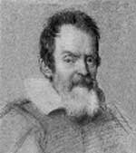

Tanrı dünyayı temelleri üzerine yerleştirmiştir. Dünya bu yüzden asla hareket edemez.
— Psalms 104:5
Evet, ama yine de dönüyor.
— Galileo Galilei
Nicolaus Copernicus (Kopernik 1473-1543), Dünya’nın Güneş’in etrafında döndüğünü keşfetti. Ne var ki ölüm döşeğine gelene kadar bu aykırı düşüncesini yayınlamaya cesaret edememişti. İtalyan bir astronom ve fizikçi olan Galileo Galilei (1564-1642) ise bu düşünceyi kamuya açıklamış ve sonuçlarına katlanmak zorunda kalmıştır.

Bir sapkın ve Roma Katolik Kilisesi’nin düşmanı olarak damgalanan Galileo, ölümle tehdit edilmiş ve güneş merkezli evren teorisinden vazgeçmeye zorlanmıştır. 1633 yılında engizisyon mahkemesindeki yargılamasından sonra hayatının kalan kısmını ev hapsinde geçirmek zorunda kalmıştır.
Onu eleştirenlere göre Galileo’nun tehlikeli düşünceleri sadece evrenin o zamana kadar algılanma şeklini değiştirmekle kalmıyor aynı zamanda Batı medeniyetinin dinsel temellerini de sarsıyordu. İncil’de anlatılan yaratılış düşüncesini sorgulamakla Hıristiyanlığın altını oyduğundan endişe ediliyordu. Eğer Dünya gerçekten evrenin merkezinde değilse onu yaratan Tanrı gerçekten de her şeye kadir olabilir miydi?
Zamanla Galileo’nun düşünceleri bilimde ve Batının doğayı algılama şeklinde bir devrim yarattı. Kendi kültürünün en köklü inançlarını bilimsel incelemeye tabi tutması nedeniyle fiziğin ve modern bilimin babası olarak kabul edildi.
Galileo, Pisa’da doğdu. Pisa ve Padova üniversitelerinde astronomi çalıştı. 1592 yılında matematik profesörü oldu. Çağının en gelişmiş teleskoplarını kullanarak Jüpiter’in dört uydusunu keşfetti. Güneş lekelerini ilk tespit eden kişi de o oldu. Kopernik’in haklı olduğuna inanmıştı. Açık bir biçimde Güneş merkezli teoriyi savundu.
1614 yılında kiliseden Kopernik’in teorilerini öğretmeyi bırakmasını emreden bir uyarı aldı. 1634 yılında yargılanmak üzere Roma’ya çağrıldı. Sonraki yıl düşüncelerini halkın içinde reddetmeye zorlandı. Ölene kadar ülkesinde ev hapsinde tutuldu.
Ek Bilgiler
1- Galileo bir mucitti. 1594 yılında atların çalıştırdığı bir su pompasının patentini aldı. Aynı zamanda termoskopu icat etti. Bu alet ilkel bir termometreydi.
2- Galileo’nun bulduğu Jüpiter’in dört uydusu (Io, Europa, Callisto, ve Ganymede) onun onuruna “Galileo Uyduları” olarak adlandırılmaktadır.
3- 1989 yılında Nasa tarafından Jüpiter’in uydularını araştırmaya gönderilen insansız hava aracı Galileo olarak adlandırılmıştır. Gezegene ulaşmak altı yıl almış, araç Jüpiter’e çarptığı 2003 yılına kadar dünyaya ölçümler ve fotoğraflar göndermiştir.